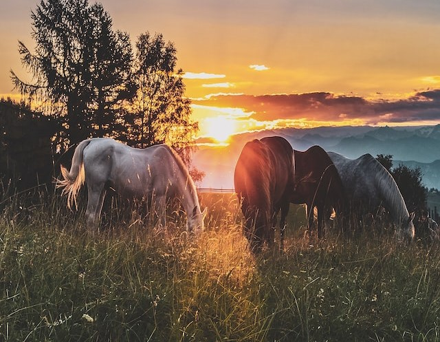
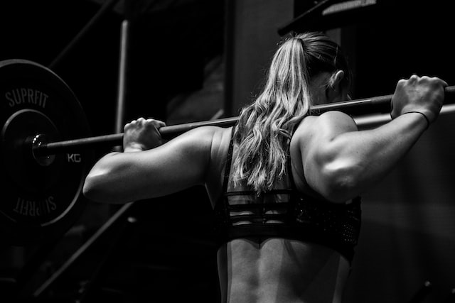

Liefde voor dieren zit al van sinds mijn geboorte in mijn bloed. Wanneer ik 5 jaar was wou ik graag gaan paardrijden, maar op dat ogenblik was ik nog te jong en moest ik nog een jaartje wachten. In die tussentijd hield ik mij vooral bezig met sprinkhanen en kikkersvangen. Ik was dus zeker geen indoor kind. Wat dus ook kan afleiden dat ik dus niet bang was om een “beetje” vuil te worden, tot de ergernis van mijn ouders.
Uiteindelijk toen ik 6 werd begon het avontuur. Ik weet zelfs de naam nog van het aller eerste paard waar ik heb op mogen rijden, “Furica”. De paardenkriebels waren in gang gezet. Jaren gingen voorbij, en naarmate ik ouder werd wou ik steeds meer en meer een eigen paard. Door jaar in jaar uit de oren van mijn ouders af te zagen, kreeg ik uiteindelijk op mijn 14de verjaardag een eigen pony.
Domino. Was een 2 jarige Haflinger die nog niet zadelmak was. Wanneer hij 3 jaar werd heb ik hem samen met mijn vader zadelmak gemaakt. Na een paar keer vallen en opstaan is het ons uiteindelijk gelukt, een hoofdstuk van een nieuw avontuur.
Ik heb met hem zeer leuke momenten mogen meemaken, en zal hem daar ook altijd dankbaar voor zijn. Wanneer ik 20 jaar werd voelde ik dat de paardenkriebels aan het verdwijnen waren, en dat ik andere interesses begon te krijgen. Sinds mijn 21ste heb ik niet meer op een paard gezeten. Maar Domino leeft nu zijn volste leven hier bij ons waar hij heel zijn leven op een grote wei met veel gras kan staan, dus ik denk niet dat hij het zo erg zal vinden.
Na mijn paarden carrière kreeg ik meer en meer interesse in fitness.
Wanneer ik 21 jaar was ben ik daar dan ook mee begonnen. Toen ik voor de eerste keer ging fitnessen, kwam je de fitness binnen en zag je overal toestellen staan. Als beginner weet je natuurlijk niet waar beginnen en waarvoor al die toestellen nu eigenlijk dienen. Uiteindelijk na veel hulp van vrienden en mensen in de fitness die zo vriendelijk waren om sommige oefeningen uit te leggen. Na een hele periode oefenen, was ik eindelijk goed met alles weg. Jaren gingen voorbij en uiteindelijk was ik niet meer weg te krijgen uit de fitness, elke dag was ik er wel te vinden. Fitness heeft mij mentaal en fysiek sterker gemaakt, ik kan er alleen maar positieve dingen over vertellen. En tot op het heden ben ik nog steeds aan het fitnessen!
